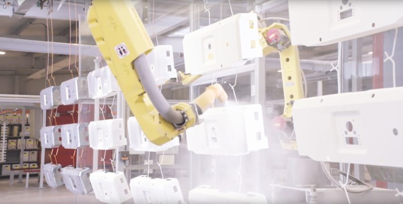
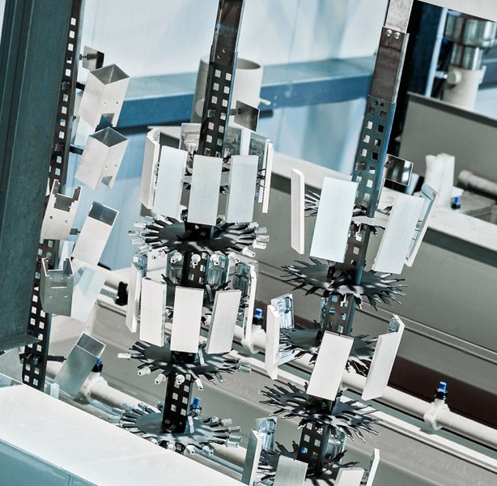

Vorbehandlung Aluminium
- Verfahren
- 6-Zonen-Vorbehandlung
- Zone 1
- Beizentfettung
- Zone 2
- Spülung
- Zone 3
- VE-Spülung
- Zone 4
- Passivierung
- Zone 5
- VE-Spülung
Beschichtbare Werkstoffe: Stahl, Aluminium, Edelstahl, verzinkter Stahl.
Start · Oberflächentechnik
Oberflächentechnik
Die Materialien Aluminium und Stahl sind es wert, geschützt zu werden und eine besonders edle Oberfläche zu erhalten. Ferk Metallbau verfügt über langjährige Erfahrung und die technische Ausstattung, um selbst große Teile problemlos zu beschichten – in nahezu jeder gewünschten Farbe und mit zahlreichen Spezialeffekten.
/ 01 Pulverbeschichtung
Für den Schutz und die Veredelung metallischer Oberflächen setzen wir das Verfahren der Pulverbeschichtung ein. Neben einer einwandfreien Optik sorgt diese Arbeitsweise auch für eine hohe Widerstandsfähigkeit der einzelnen Teile und Komponenten. Mithilfe eines Vorbehandlungsprozesses können Stahl, Aluminium, Edelstahl und verzinkter Stahl beschichtet werden. Die ständige Überwachung und Dokumentation der Fertigungsprozesse nach EN ISO 9001 gewährleistet die gleichbleibende Qualität unserer Produkte.
Ferk legt besonders großen Wert auf umweltschonende Produktionsverfahren: Es werden keine Lacke und Lösungsmittel verwendet, schädliche Dämpfe werden vermieden und die Vorbehandlung erfolgt Chrom-VI-frei. Damit ist die RoHS-Konformität gegeben.
Beschichtbare Werkstoffe: Stahl, Aluminium, Edelstahl, verzinkter Stahl.

/ 02 Beschichtungsroboter
Um beste Qualität und kurze Lieferzeiten gewährleisten zu können, setzt Metallbau Ferk bei der Oberflächenveredelung spezielle Beschichtungsroboter ein. Ein breites Einsatzspektrum – von Einzelteilen über Serienfertigungen bis hin zu komplexen Sonderformaten – macht das Verfahren zu einer kostengünstigen und umweltfreundlicheren Lackiermethode. Darüber hinaus sind die Teile nach dem Abkühlen sofort einsatzbereit.

/ 03 Eloxal
Eloxal ist ein Beschichtungsverfahren, das bei Metallbau Ferk für die Veredelung metallischer Oberflächen eingesetzt wird. Die Besonderheit besteht in der äußerst dichten und harten Oxidschicht, die auf das Aluminium aufgetragen wird. Die anodische Oxidation sorgt für einen ausgezeichneten Schutz vor Korrosion und jeglichen Witterungseinflüssen. Zudem können Teile und Komponenten ganz nach Ihren Wünschen eingefärbt werden.
Zur Erzeugung einer oxidischen Schutzschicht auf unseren Aluminiumteilen setzen wir eine spezielle Eloxalanlage ein. Mithilfe dieser Anlage schaffen wir die optimale Grundlage für langlebige, aber auch optisch ansprechende Teile. Qualifizierte Mitarbeiter sowie unsere jahrelange Erfahrung im Bereich der Oberflächentechnik garantieren beste Qualität und kurze Lieferzeiten.
/ 04 Beschichtungspreise
Die Preise für das Pulverbeschichten richten sich nach der Bearbeitungsgröße, zusätzlichen Vorbehandlungsarbeiten sowie dem gewählten Farbton.
Der endgültige Preis kann nach einer umfangreichen Beratung durch unsere erfahrenen Mitarbeiter festgestellt werden.
Siegfried Reischl
0664 88 50 40 29
s.reischl@ferk-metallbau.at
/ 05 Hinweise
Um eine einwandfreie Qualität Ihrer Produkte gewährleisten zu können, möchten wir Sie auf folgende Punkte hinweisen. Werden sie eingehalten, ermöglicht das ein rasches und effizientes Arbeiten unsererseits.
Informieren Sie uns bereits im Vorfeld, welchen Einsatzzweck Ihre gewünschten Waren haben werden. Nur so lässt sich die korrekte Wahl der Pulversorte, des Vorbehandlungs- und des Beschichtungsverfahrens treffen und ein optimales Qualitätsergebnis erzielen.
Wasserfeste Beschriftungen oder Fettstifte können von der Vorbehandlung zur Pulverbeschichtung nicht entfernt werden. Solche Beschriftungen können von der Beschichtung auch nicht überdeckt werden. Daher bitte nur an nicht zu beschichtenden Stellen anbringen.
Aufkleber, Packband und Etiketten sollten nicht auf die zu beschichtenden Teile geklebt werden, da mit der Entfernung ein hoher Zeitaufwand verbunden ist. Packband zur Verpackung daher nur auf Wellpappe oder Folie verwenden.
Rost muss vorher gründlich von den zu beschichtenden Teilen entfernt werden. Sonst besteht die Gefahr, dass die Lacke nicht gut haften, eine Bläschenbildung entsteht und eine spätere Absplitterung erfolgt.
Ihr Werkstück sollte vor der Beschichtung auf keinen Fall mit Silikon in Berührung kommen. Eine Pulverbeschichtung ist im Anschluss nicht mehr möglich – selbst ein einmaliger Kontakt mit silikonverschmutzten Händen oder das Probieren von Kunststoffdichtungen in Türprofilen lässt keine Pulverbeschichtung mehr zu.
Laserschnitte, die nicht oxydfrei gelasert werden, hinterlassen einen Oxydfilm. Auch hier kann der Lack nicht einwandfrei haften, eine Absplitterung ist nicht auszuschließen. Empfehlenswert: Laserschnitte mit Stickstoff durchführen oder die Schnittkante nach dem Lasern mechanisch säubern.
Angetrocknete Öle und Fette können von unserer Vorbehandlung nicht entfernt werden. Vor allem in Rohren sind sie für uns nicht feststellbar und werden erst nach der Beschichtung erkennbar. Die nachträglichen Arbeiten sind zeit- und kostenintensiv, eine spätere Ablösung des Lackes ist nicht auszuschließen. Werkstücke daher vorher gründlich reinigen.
Die Pulverbeschichtung erfolgt hängend. Aufhängelöcher daher so planen, dass die Sichtseiten senkrecht hängen und Wasser problemlos abrinnen kann. Wasserablauflöcher müssen das Ab- bzw. Ausrinnen der flüssigen Vorbehandlung gewährleisten.
Das Strahlen führt zu einer erheblichen Gefahr der Rostanfälligkeit. Von Ihnen vorgestrahlte Teile können am Transportweg zur Pulverbeschichtung rosten.
Das Pulverbeschichten verzinkter Teile ist äußerst problematisch und wird nur mit Vorbehalt durchgeführt. Eine ausreichende Qualität kann keinesfalls garantiert werden: Durch den Zinkaufbau kann es zu Ausgasungen (sichtbare Poren) kommen, Weißrost vermindert die Haftung. Bitte sprechen Sie bei verzinkten Teilen immer vorher mit uns.
Die Pulverbeschichtung kann Kratzer an den Oberflächen nicht abdecken. Sorgfältiges Arbeiten ist unumgänglich.
Walzhaut und Zunder sollten sorgfältig entfernt werden, sonst ist eine spätere Absplitterung des Lackes – vor allem bei Witterungseinflüssen – nicht auszuschließen. Für Innenanwendungen mit geringen Qualitätsansprüchen kann darauf verzichtet werden.
Hartlötungen müssen vom Werkstück entfernt werden, um ein einwandfreies Beschichtungsergebnis erzielen zu können.
Werden Weichlote eingesetzt, müssen unsere Mitarbeiter darüber informiert werden: Die für Weichlote zu hohe Hitze in den Öfen zerstört das Werkstück.
Flächige Spachtelungen sollen keinesfalls durchgeführt werden, da es zwischen gespachtelten und ungespachtelten Bereichen zu Qualitätsverlusten kommt. Polyester- und Epoxidspachtelmasse dürfen für anschließend pulverbeschichtete Teile nicht verwendet werden. Kehlnahtspachtelungen sind in bestimmten Fällen möglich.
Pulverbeschichtete Werkstücke können eventuell überbeschichtet werden. Ein einwandfreies Ergebnis können wir nicht garantieren, da uns die Art der Vorbehandlung nicht bekannt ist. Das Risiko liegt in diesem Fall beim Kunden.
Nicht zu beschichtende Teile eines Werkstückes werden mit hitzebeständigen Materialien abgedeckt. Nach Absprache führen wir solche Abdeckungen mit den dafür vorgesehenen Materialien selbst durch.
Sämtliche Arten von Guss verursachen Probleme beim Pulverbeschichten. Auch hier kann keine Garantie über die Qualität abgegeben werden, eine Absprache mit uns ist unumgänglich.
Da sich bei Edelstahl die Phosphatschicht der Vorbehandlung nicht aufbaut und keine Haftbrücke entsteht, haftet das Pulver nur durch die Oberflächenrauheit und wesentlich geringer als bei normalem Stahlblech. Strahlen und Schleifen können die Haftung verbessern; eine Qualitätsgarantie ist nicht möglich.
Grate und scharfe Kanten sollten unbedingt vermieden werden: Bei der Pulverbeschichtung kommt es zur Kantenflucht, eine 100-prozentige Abdeckung erfolgt hier nicht. An diesen Stellen beginnt es mit hoher Wahrscheinlichkeit in kürzester Zeit zu rosten.
Schruppscheiben und grobe Schleifpapiere (< 80er) sind nicht geeignet für Flächen, die anschließend beschichtet werden sollen.
Nach der Pulverbeschichtung ist das Werkstück fertig. Ein darauffolgendes Abkanten oder Schneiden ist unzulässig – bei nachträglicher Bearbeitung erlischt jegliche Gewährleistung.
Verschiedene Beschichter haben unterschiedliche Lieferanten. Aufgrund zulässiger Farbtontoleranzen fällt derselbe Farbton bei verschiedenen Beschichtern mit hoher Wahrscheinlichkeit anders aus. Geben Sie eine Farbe eines Auftrages daher nur bei einem Beschichter in Auftrag.
Beratung
Unsere erfahrenen Mitarbeiter beraten Sie gerne über das für Ihr Projekt am besten geeignete Oberflächenverfahren – Pulverbeschichtung oder Eloxal.